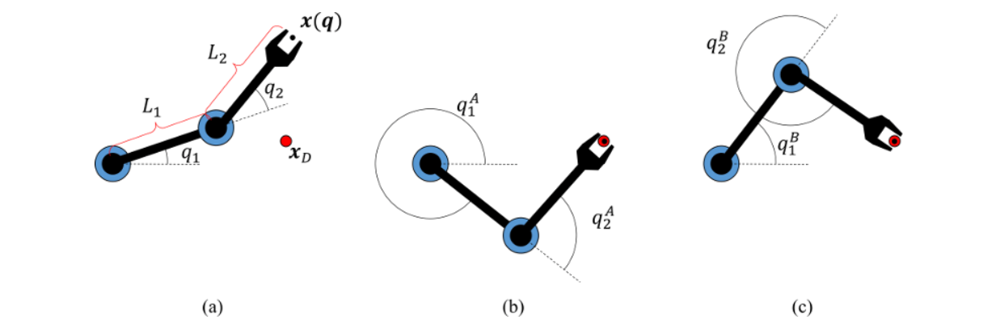
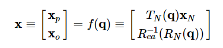

- Inverse Kinematics
1. General discussion
If we express the coordinates of some point X attached to the robot as a vector x , forward kinematics allows us to compute a map x(q)≡f(q) where q is the robot's configuration. Note that this map is vector-valued. The goal of IK is to produce an inverse of the map f , or more specifically, given a desired value xD , calculate one or more solutions q such that xD=x(q)≡f(q) hold. We also say that x(q)−xD=0 is the constraint equation that q must meet.
Figure 1. Illustrating the IK problem for a 2R planar manipulator. (a) The goal is to find one or more configurations q so that the end effector position x(q) is matched to a target position xD . IK problems may have more than one solution, and in this case there are two solutions (b,c) given by (q1A,q2A) and (q1B,q2B) .
For instance, suppose X is a point on link N and has local coordinates xN (relative to link N ). After the robot moves, link N has coordinate frame TN(q) relative to the world frame. Hence, X has world coordinates
x(q)=TN(q)xN
Given xD specifying some desired coordinates of X in the world frame, IK would compute some q so that TN(q)xN=xD . Depending on the value of xD and the kinematic structure of the robot, there may be no solution, such as when the desired point is out of reach. There may also be multiple solutions, as illustrated in Fig. 1. A third case is when infinite solutions may occur, such as when the robot is redundant, which means that it possesses more degrees of freedom than the dimension of the workspace.
1.1 Task space
The coordinates x are known as task coordinates which define the robot's intended goal that it should perform in Cartesian space. In the example above, the task consisted only of Cartesian position, but it could generalize to also include orientation of the final link through a different choice of f . To define a combination of position and orientation goal, we would append some rotation parameterization like Euler angles to x , and define the forward kinematic map:
where RN(q) is the 3x3 rotation matrix of the N 'th link, and Rea−1(R) computes the euler angle representation of the rotation matrix R (according to some chosen convention). Here xp is the position of X and xo is the Euler angle representation of the orientation of the link on which it resides.
It is also possible to define more exotic task spaces to accomplish different goals. Suppose for example that X is a point in the middle of the robot's gripper, and it is supposed to lift a cup of liquid without tipping it. If we define a local direction dN as an "up" direction perpendicular to the gripper opening direction, and z being the up direction in world coordinates, then we can specify a directional task constraint:
d(q)−z=RN(q)dN−z=0(3)
where d(q) is the direction of the desired "up" vector attached to the gripper, but expressed in world coordinates.
In general, the task space may consist of any number of position and orientation constraints on the robot. For example, for a k-legged robot, up to k leg positions and orientation may be constrained to be fixed while the body moves. In any of these cases we can still express the constraint as a vector equation x(q)−xD=0 by stacking each individual constraint into a larger vector.
1.2 Analytical vs numerical IK
There exist two general approaches for solving IK problems. In the analytical approach, the equation xD=f(q) is mathematically inverted into a closed-form expression through symbolic manipulations. In the numerical approach, we are given an initial guess q0 and then calculate a sequence of configurations q0,q1,q2,… such that the error ∥f(q)−xD∥ approaches 0. This section will focus on analytical methods.
The advantages of the analytical method include:
- Computes all IK solutions, and determines whether no solution exists.
- Once the equations are derived, solutions are very fast to compute.
- No need to define solution parameters or initial guesses q0.
Disadvantages of the analytical method include:
- Often difficult or tedious to derive.
- Must be derived independently for robots with different kinematic structures.
- Only applicable to nonredundant robots (# DOFs = # of task space dimensions).
1.3 Choosing from a set of solutions: incorporating extra constraints
It is important to note that when multiple solutions exist, neither IK approach specifies which solution is "best." Also, it is important to note that many of the solutions produced by IK techniques may be infeasible for a robot to undertake. For example, IK solutions may exceed joint limits, cause the robot to self-collide, or cause the robot to collide with environmental obstacles. In fact, the notion of "best" or "feasible" must be defined by some criterion external to the choice of task. The requirement of producing high-quality solutions can be considered as a soft constraint, while strict requirements are considered hard constraints.
Soft constraints can be expressed as seeking an IK solution that minimizes some scalar function g(q) . To handle soft constraints, in the analytical case where multiple solutions exist, we may simply loop through all solutions; in the numerical case, there are some solution techniques that (locally) minimize g(q) among possible solutions. To handle hard constraints in the analytical solution case, they may be checked after solving for all solutions. In the numerical case, it is preferable to use solution techniques that enforce these additional constraints.
Throughout this chapter, however, additional constraints will not be considered unless otherwise specified.
1.4 Counting solutions
For almost all task parameters x (in a sense to be made more precise later) and "usual" kinematic structures, it is possible to coarsely determine the number of solutions simply by examining the number of DOFs of the robot and the number of constraints. Letting n be the number of DOFs and m be the number of task constraints, we have the following general rules:
- If n < m , then no solutions to x=f(q) exist. (Overconstrained system of equations.)
- If n = m , then a finite number of solutions exist.
- If n > m , then either no solutions or an infinite number of solutions exist. (Underconstrained system of equations.)
In the overconstrained case, there is insufficient flexibility in the choice of q to attain arbitrary values of x . In the underconstrained case, the robot is also called redundant. When the task exceeds the reach of the robot, there is no solution, but whenever a solution exists, there is a continuum of solutions that attain the same task. In fact, the solution set in general will have intrinsic dimension n−m -- that is there will be n−m independent directions of flexibility in configuration space while maintaining the task as fixed. It is often the case in redundant robots that it is difficult to characterize all of the solutions for a given task, although we shall describe methods for doing so when describing parallel robots.
1.5 Singularities
The counting rules hold almost everywhere except for certain unstable settings of the parameter x , which are known as singularities. We have already discussed singularities in the context of 3D rotations, where a rotation may have multiple representations. In nonredundant IK, a singularity occurs when the task has an infinite number of solutions, or precisely one solution. In redundant IK, a singularity is observed as a change in the intrinsic dimensionality of the solution set.
Singularities are unstable in the sense that any open neighborhood containing a singular task point x will have different numbers of solutions. In other words, if x were perturbed slightly, the number of solutions will almost certainly change. Non-singular points do not have this problem: for a non-singular point x , there will exist an open neighborhood of x for which the number of solutions remains constant.
In practical terms, singularities usually avoided during IK for a number of reasons: as a singularity is approached in task space, the solution configurations change increasingly rapidly, and the solution set may change size, making it challenging to produce smooth movements. There is a straightforward way of computing whether a configuration is at a singularity via a condition about the task's Jacobian matrix.
 Previous
Previous